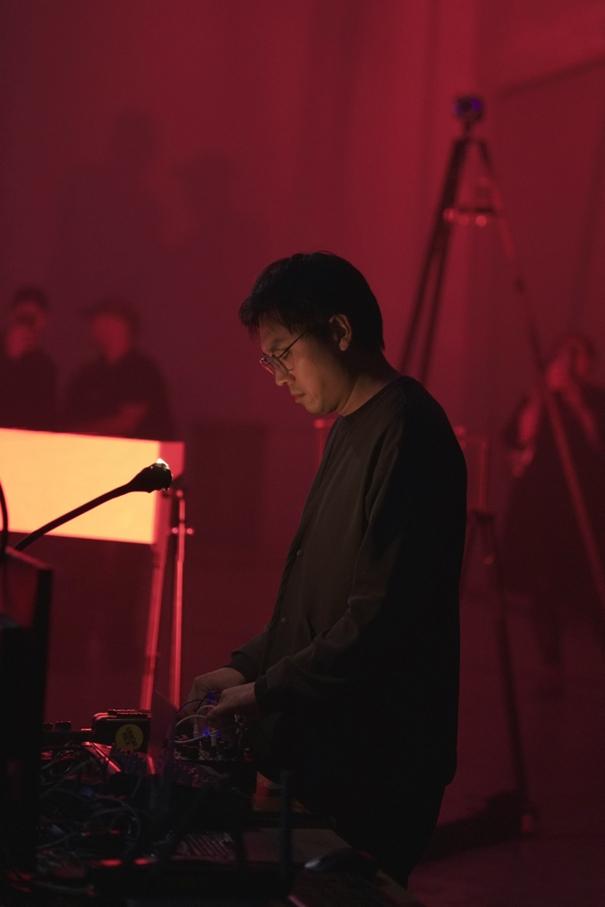

About

Sou Yan Ting Antonio is a Macau-born sound artist and composer based in The Hague. His live electronics practice revolves around modular synthesis and feedback-based instruments, exploring how sound emerges through the friction between humans and machines.
As one half of Faslane, an electroacoustic project formed with Matthew Ho in Macau, Sou released Wartime Broadcasting Service on Day’s Eye Records and has performed at festivals including LUFF (Switzerland), Dao Xuan (Vietnam), Kill The Silence (Macau), and Twenty Alpha (Hong Kong). More recently, he performed with Puck Wacki at Conflux Festival and Keep.Space.Fest in the Netherlands.
Sou is also a founder of Guia Experiment, a Macau-based artistic collective that curates festivals, exhibitions, and concerts dedicated to experimental sound while promoting education in sonic arts.